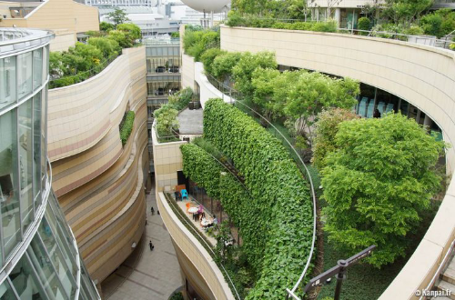

GREEN ARCHITECTURE
green architecture, philosophy of architecture that advocates sustainable energy sources, the conservation of energy, the reuse and safety of building materials, and the siting of a building with consideration of its impact on the environment.
Green architecture is a philosophy that aims to minimize the negative environmental impact of buildings. It involves using materials and construction practices that are eco-friendly.
Green architecture aims to:
Green architecture aims to:
-Minimize the use of resources in the construction, use, and operation of a building
-Reduce the harm to the environment caused by emissions, pollution, and waste
-Ensure the quality of life of living communities for many years to come
Some features of green buildings include:
-Energy efficiency
-Renewable energy generation
-Water efficiency
-Stormwater management
-Superior indoor environment
Green architecture also advocates for:
-Sustainable energy sources
-Energy conservation
-The reuse and safety of building materials
-Considering the impact of a building's location on the environment
Our Team
Naufal Nashshar Fahlevy
Nama saya Naufal Nashshar Fahlevy (10423026), saya berasal dari Bandung, dan saya sekarang seorang mahasiswa arsitektur di UNIKOM, hobi saya bermain bola dan games,cita-cita saya ingin jadi arsitek yang berguna.

Azhar Lazuardi Tafazzani Artyasa
Nama saya Azhar Lazuardi Tafazzani Artyasa (10423046), Seorang mahasiswa UNIKOM yg mempunyai hobi menggambar, main bola, main game dll. Dan bercita cita menjadi pengusaha dan arsitek.
Muhammad Ikhsanul Arifin
Nama saya Muhammad Ikhsanul Arifin (10423030), Seorang mahasiswa UNIKOM dan juga atlet tinggal di Purwakarta. Suka segala yang berhubungan dengan olahrag. Cita-cita saya ingin menjadi Arsitektur muda dan pengusaha.
Bima Maulana Putra Muaja
Nama saya Bima Maulana Putra Muaja (10422037), saya berasal dari manado, saya seorang mahasiswa arsitektur di UNIKOM, hobi saya menggambar,baca komik,dan main game, cita cita saya kAPaal Laud.

Ibnu Zharfan Samudra
Nama saya Ibnu Zharfan Samudra dengan NIM 10423033, asal dari Belitung dan mempunyai hobi bermain gitar, mendengarkan musik, menonton film dan bermain game, cita cita saya ingin menguasai dunia.